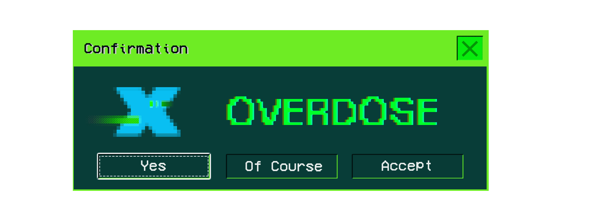
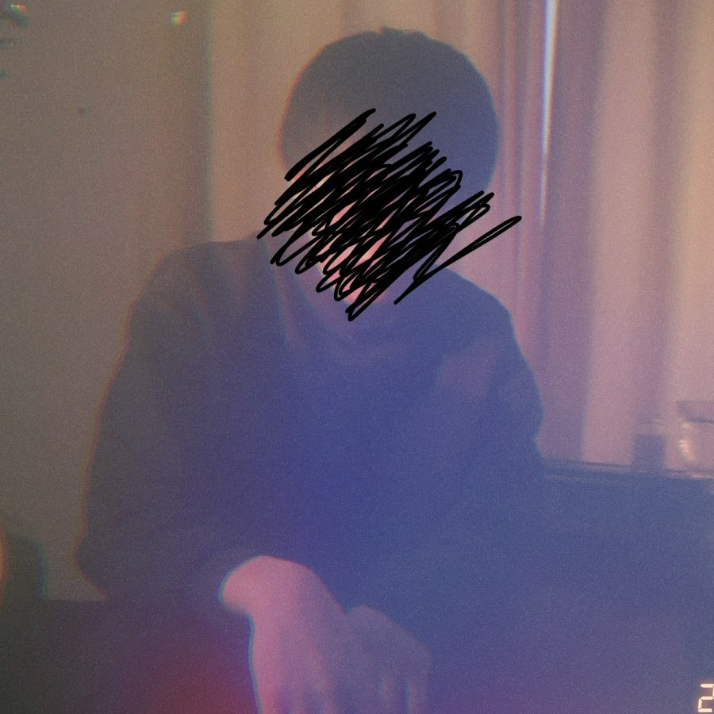

Natori
E Minor / 118.012 BPM
なとりさんがリリースした「Overdose(オーバードーズ)」とは、日本語で薬物などの過剰摂取を意味する言葉です。のめり込むという意味もあり、何かをやめられなくなった状況を歌った楽曲だと察せられます。
1番では薬物の多量摂取で得られる高揚感や現実逃避と同じように、いけないことだと分かりつつも刺激的でやめられない依存性のある愛を歌詞に表しています。サビ部分の「解像度の悪い夢」とは、現実を直視したくない鮮明ではない夢のことです。ファンの中では楽曲が表しているのはただの恋人ではなく、不倫や浮気ではなないかと考察されています。
2番では葛藤しながらも結局2人の関係が続いている様子が描かれ、自分自身への問いかけをしているように始まります。歌詞の中のTwo step from(hell)with me, darlingは直訳すると「2人は地獄の2歩手前」です。このまま2人の関係を続けるのはお互いの将来にも世間からも歓迎されないのにやめられないという状況のようです。
最後は、よくない関係だと分かっていても関係を続けていくことを選択したように綴られています。地獄の2歩手前にいる2人が関係を続け、この先どうなるのかが結末が気になる歌詞です。
なとりのTikTok初投稿は2021年5月。以降、TikTokをメインに、YouTubeでも同時にハイペースでオリジナル曲を発表してきた。2022年10月初旬現在、TikTok内ですでに15曲以上のオリジナル曲を発表しているが、まずは映像の演出がうまい。例えば、初投稿の「ターミナル」では、動画の冒頭に「作曲1ヶ月目の私が音楽作ってみた」というテロップが入る。ほとんどの動画の尺を30秒から1分前後、長くても1分30秒程度にしているのは、TikTokのメリットを殺さないためだろうと考察する。加えて、2022年の5月に投稿した「模倣犯」まで本人が登場せず、各楽曲をコンセプチュアルな映像とともに配信してきた流れには、クリエイターとしての才能も感じる。また、動画題材のチョイスも独特だ。人気漫画のアニメーションを合わせたり、ホラー風な浮世絵、活動写真のようなモノクロの映像、古いアメリカ映画、昨今のTikTokのモードをおさえた青春Vlog風と、実に幅が広い。だが、それよりも注目するべき部分は、TikTokで流し見していても、指が止まるほどに楽曲が耳に残ることだ。
The song "Overdose" released by Natori is a term in Japanese that means excessive intake of substances such as drugs. It also implies being deeply involved in something, suggesting a situation where one becomes unable to quit. In the first verse, the lyrics depict a love with an addictive quality that, like the euphoria and escapism obtained through excessive drug use, is understood to be wrong but irresistibly captivating. The phrase in the chorus, "a dream with low resolution," refers to dreams that are not vivid and clear, expressing a desire not to confront reality directly. Among fans, it is speculated that the song represents not just a regular romantic relationship but possibly infidelity or cheating.
In the second verse, the lyrics portray the ongoing relationship between the two characters despite inner conflicts, and it begins with a self-directed question. The phrase "Two step from (hell) with me, darling" translates to "Two steps away from hell with me, darling." This suggests a situation where the continuation of their relationship is undesirable for both their futures and societal approval, yet they can't seem to stop.
The final part of the lyrics describes a choice to continue the relationship despite knowing it's not healthy. The lyrics leave the outcome of the two individuals, who are figuratively two steps away from hell, continuing their relationship, creating a sense of curiosity about what will happen next.
Natori's first TikTok post was in May 2021. Since then, he has been consistently releasing original songs at a high pace on both TikTok and YouTube. As of early October 2022, he has already released more than 15 original songs on TikTok. One notable aspect is his skillful video production. For example, in his first post, "Terminal," there is a caption at the beginning of the video that says, "I composed this music in my first month of creating music." Most of his videos are kept around 30 seconds to 1 minute, with the longest being about 1 minute 30 seconds, likely to maintain the advantages of TikTok. Additionally, up until "Imitation Offender" posted in May 2022, he didn't appear in the videos himself. Instead, he delivered each song with conceptual visuals, showcasing his talent as a creator.
Furthermore, his choice of video themes is unique. It spans from combining popular manga animations with horror-themed ukiyo-e, monochromatic images resembling silent films, old American movies, to youthful Vlog-style videos in line with the current TikTok trends. However, what is more noteworthy than all of this is that, even while casually scrolling through TikTok, the music is so memorable that it can make your fingers stop scrolling.